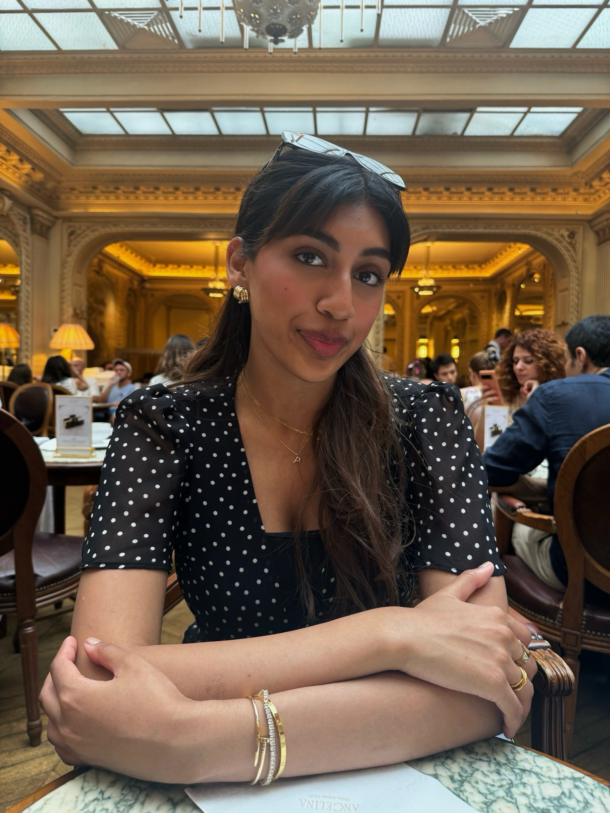
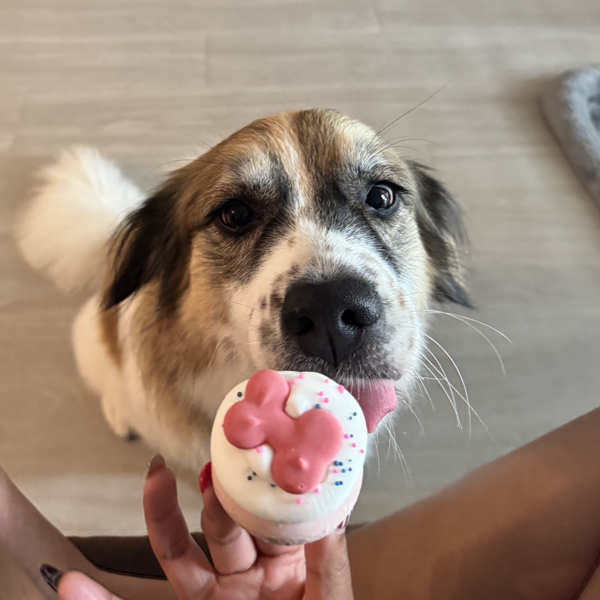
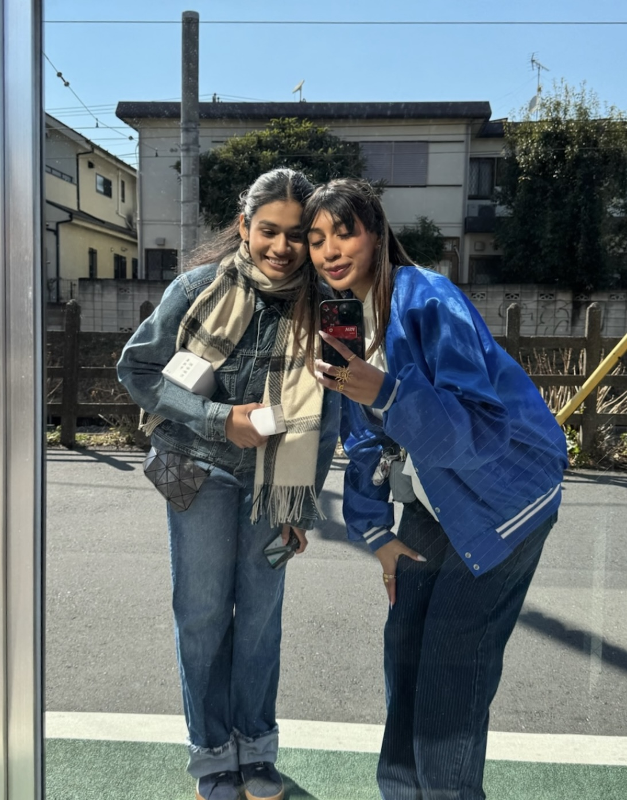

About me
I’m Preethi — an architect and urban designer turned UX/UI product designer. I design digital products and the spatial environments they live inside, fluent in both pixels and plans.
I spent years in architecture and urban design, drawn to how people move through and feel inside the spaces we build. That same instinct now drives my product work: designing interfaces and systems that are intuitive, humane, and built to scale.
Recently I’ve worked on Aeqos, an AI housing-data app, Vayu, and Mosaic41, an urban spatial system — blending research, data, and craft into each.
Outside of work, you’ll find me traveling with my sister (Japan and Paris, most recently), exploring cities on foot, and at home with my Australian Shepherd and resident QA tester, Olive.


